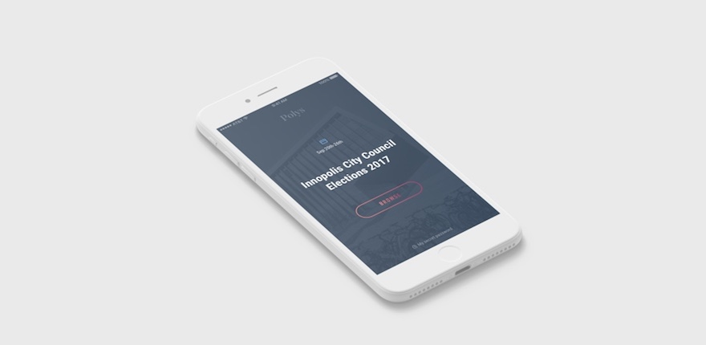

02.21.2018
5 reasons you should try Online Voting
with Voting

Eman Rayyan

The future comes much faster than we realize. The Internet, mobile phones, emails, GPS navigators, social networks, online shops — all these things are so organically inscribed in our life. And yet, they only appeared in the last couple of decades or so. What will be next? Maybe totally secure online voting? Actually, it already exists — and it’s called Voting.
Polys is a platform for online voting based on blockchain technology. Here we’ll tell you what’s so great about online voting and why everyone who needs to hold elections or polls should embrace it.
We understand that initially there will be lots of questions about online voting. What happens to the votes? How are the results counted? What about anonymity and security? And, of course, there will be some resistance: "I'm used to the good old ballot box and don't want to change anything!" But we believe we can win over the doubters because we are 100% convinced that the advantages of online voting are greater and voters will soon see that it’s the ideal solution. And here are just a few reasons why:
It’s safe and secure. Online voting based on blockchain technology eliminates any interference in the voting process. You can think of a blockchain as a distributed database. Unlike regular servers where stored data can be hacked or manipulated, data in a blockchain is stored in information blocks on the computers of all the network participants. That makes it practically impossible to hack because you’d have to hack all the machines on the network.
It's transparent and anonymous. We use mathematic algorithms to encrypt preliminary results and ensure voter anonymity. Also, we have made monitoring something that everyone can do online to make sure elections are immutable, safe and fair.
It's absolutely flexible. Polys is a flexible application that can be easily customized for your particular needs.Additional features, custom authorization, a branded voting app and much more can be implemented to satisfy the needs of the vote organizer.
It saves resources. You no longer have to print and distribute ballot papers and explanatory letters. If this process used to take days or weeks, then now, by using Polys, you can start voting in a matter of hours. Just imagine how much energy and money you will save. Plus, online voting doesn’t require the presence of voters at an appointed time at a designated place. People can vote on any device from anywhere. We believe this will increase voter turnout, as it will be much easier to find time to vote.
It's user-friendly. Polys has a convenient organizer panel. No specific training or IT expertise is needed to create a vote. It is absolutely painless, and takes just a few minutes.
All this makes Polys the perfect solution for online voting at all levels — for communities, political parties, businesses, governments, and academia.
We keep our finger on the pulse of innovation and are constantly looking for ways to improve Polys. We also know that a successful product is not created by the development team alone – customers and their feedback also play a huge role. Customer suggestions and requests help us become better.
We invite you to create your first online vote right now – and would appreciate any feedback.